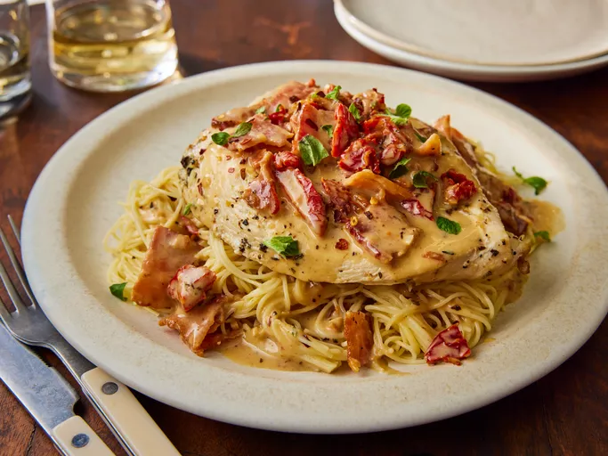

Chicken

Ingredients:
- 1 ½ pounds skinless, boneless chicken breast halves
- 2 tablespoons butter
- 3 cloves garlic, minced
- ½ teaspoon dried oregano
- ¼ teaspoon ground thyme
- ½ cup chicken broth, divided
- ½ pound bacon
- 1 (16 ounce) package angel hair pasta
- 1 tablespoon all-purpose flour
- ½ cup freshly shaved Parmesan cheese
- ¼ cup whipping cream
- ¼ cup chopped sun-dried tomatoes
- 1 pinch red pepper flakes
- salt to taste
Steps:
- Preheat the oven to 350 degrees F (175 degrees C)
- Butterfly chicken breasts by slicing horizontally through the middle
- Melt butter in a large, oven-safe skillet over medium-high heat
- Add garlic, oregano, thyme and sauté until fragrant (30 seconds)
- Add chicken and cook until golden brown (3-4 minutes per side)
- Pour 1/4 cup chicken broth into skillet and bake for 15 minutes
- Meanwhile, cook bacon until crispy, drain and chop
- Cook angel hair pasta according to package directions
- Remove chicken from skillet and keep warm
- Whisk flour into skillet juices over medium heat
- Add remaining broth, Parmesan cheese, and whipping cream
- Add sun-dried tomatoes, red pepper flakes, and salt
- Return bacon and chicken to skillet
- Serve over hot cooked pasta